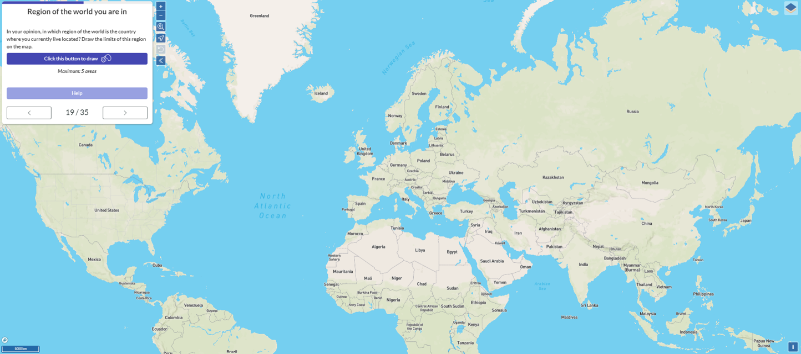
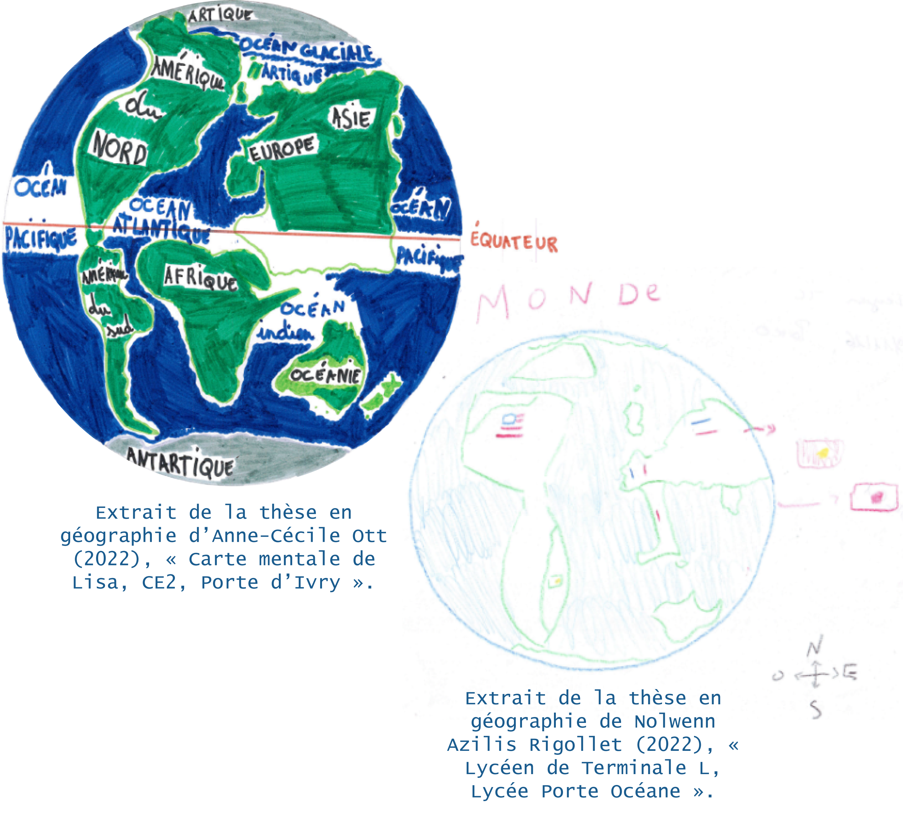

function set(input, value) {
input.value = value;
input.dispatchEvent(new Event("input", {bubbles: true}));
}
// WIDGETS ----------------------------------------------------
// {{< include ../scripts/W1A_map_stu_reg.js >}}
// {{< include ../scripts/W1B_map_stu_explo.js >}}
import {map_W1C} from "753e135be027a598"
import {map_W1D} from "9144ae793b906e41"
import {viewof select_W2A} from "126c3f60cbfdd337"
import {viewof rotate_W2A} from "126c3f60cbfdd337"
import {viewof nb_W2A} from "126c3f60cbfdd337"
import {plot_W2A} from "126c3f60cbfdd337"
import {wcd_W2A} from "126c3f60cbfdd337"
import {viewof select_W2B} from "90b110fea16bf260"
import {viewof year_W2B} from "90b110fea16bf260"
import {viewof rotate_W2B} from "90b110fea16bf260"
import {viewof nb_W2B} from "90b110fea16bf260"
import {plot_W2B} from "90b110fea16bf260"
import {wcd_W2B} from "90b110fea16bf260"
import {viewof select_W2C} from "dac79a00d1b1c9db"
import {viewof rotate_W2C} from "dac79a00d1b1c9db"
import {viewof nb_W2C} from "dac79a00d1b1c9db"
import {plot_W2C} from "dac79a00d1b1c9db"
import {wcd_W2C} from "dac79a00d1b1c9db"
// {{< include ../scripts/W3A_afc_stu_eur.R >}}
// {{< include ../scripts/W3B_afc_med_red.R >}}
// {{< include ../scripts/W3A_afc_stu_eur.js >}}
// {{< include ../scripts/W3B_afc_med_reg.js >}}
import {viewof select_W4A} from "4c80f41797fd5b8e"
import {viewof indic_W4A} from "4c80f41797fd5b8e"
import {map_W4A} from "4c80f41797fd5b8e"
import {viewof select_W4B} from "bbce317b3368f044"
import {map_W4B} from "bbce317b3368f044"
import {viewof select_W4C} from "1ea40eb67ef35c3b"
import {viewof year_W4C} from "1ea40eb67ef35c3b"
import {map_W4C} from "1ea40eb67ef35c3b"
import {viewof select_W4D} from "5b7fb13f448ac5ab"
import {map_W4D} from "5b7fb13f448ac5ab"
import {viewof idText_W5A} from "f9d6ef877e2214b8"
import {viewof nextText_W5A} from "f9d6ef877e2214b8"
import {viewof tradOnOff_W5A} from "f9d6ef877e2214b8"
import {textSel_W5A} from "f9d6ef877e2214b8"
import {ID_PI_W5A} from "f9d6ef877e2214b8"
import {viewof select_W7A} from "94666958dab9cbd4"
import {plot_W7A} from "94666958dab9cbd4"
import {viewof select_W7B} from "8212ef38b27b1816"
import {viewof indic_W7B} from "8212ef38b27b1816"
import {plot_W7B} from "8212ef38b27b1816"
import {plot_W7C} from "c8184cbec259712b"Pourquoi étudier les imaginaires macrorégionaux ?
Camille Dabestani, Clarisse Didelon-Loiseau
Qu’est-ce qu’une macrorégion ?
Le terme « macrorégion » désigne toutes les entités géographiques identifiées entre le niveau de l’Etat et celui du monde.
C’est à la fois une échelle et une entité spatiale.
Les macrorégions regroupent en fait des objets géographiques variés que l’on a l’habitude de voir et d’utiliser au quotidien : les « régions du monde », les « grandes régions », les « continents » ou « sous-continents », les « aires culturelles » ou les civilisations etc. (Mareï and Richard 2020).
Le découpage du monde en macrorégions permet d’organiser nos connaissances sur cet objet abstrait et complexe qu’est le monde, mais aussi de le gérer et de le contrôler (institutions internationales, grandes entreprises etc. par exemples) (Didelon-Loiseau and Grasland 2014).
Imaginer les macrorégions ?
Etudier les imaginaires spatiaux
Les imaginaires que l’on porte sur les macrorégions dépendent à la fois de nos connaissances, de nos pratiques et de nos représentations collectives, mais aussi individuelles (Dernat 2018). Ils sont construits par ces pratiques et représentations à la fois sociales, culturelles, politiques, historiques … et évoluent dans le temps (Bailly 1989; Gregory 1994).
On peut ainsi s’identifier collectivement ou individuellement à des régions du monde, à différentes échelles et à plusieurs entités qui se croisent et s’influencent (Jessop 2012; Sénécal 1992). De même on peut identifier des macrorégions en leur attribuant un rôle identaire aux personnes qui y résidents (« les Africains », les « Nord-Américains » etc.)
Les imaginaires macrorégionaux sont aussi des objets politiques, à l’intersection entre le pouvoir, le savoir et l’espace : on s’appuie sur eux pour produire des discours et construire des grands récits sur le monde et ses régions (Jessop 2012; Moisio et al. 2013; Rose 1993).
Pour étudier ces imaginaires macrorégionaux, nous avons demandé en 2021 à des étudiant·es dans 5 pays de tracer la ou les régions dans lesquelles ils ou elles se trouvent. L’objectif était ainsi de laisser les étudiant·es interroger à la fois les différentes manières dont ils s’imaginent leur localisation, mais aussi l’expression de leurs sentiments d’appartenance à des régions du monde.

Représenter et localiser une même macrorégion
Les réponses obtenues permettent donc dans un premier temps d’étudier les manières dont les gens se représentent un même espace.
On peut afficher sur la carte les tracés des étudiant·es en fonction du noms qu’ils et elles ont donné à l’espace représenté. On peut donc par exemple regarder toutes les macrorégions appelées « Europe », « Méditerranée », « Moyen-Orient » ou encore « Caraïbe ».
Il est ainsi intéressant de voir à quel point une même région identifiée par le nom qui lui est donné peut avoir des représentations spatiales différentes selon les personnes.
Exprimer et représenter des appartenances multiples
Cela peut aussi être une façon d’exprimer ou de représenter ses identités et ses appartenances par l’espace.
Dans cette perspective on s’intéresse plutôt à l’inclusion de la localisation de l’individu dans une région dessinée sur la carte. Chez la plupart des personnes interrogées l’inclusion de leur localisation dans une région est simple : une région continue et unique.
Parfois la situation est plus complexe : régions discontinues, régions emboitées, recouvrements partiels etc. Les personnes interrogées utilisent plusieurs logiques spatiales pour montrer les relations entre des espaces et des appartenances multiples.

Les macrorégions multiples
On retrouve ainsi des cartes mentales où les macrorégions tracées représentent des régions du monde distinctes et éloignées géographiquement les unes des autres, mais insistant sur des liens entretenus de diverses manières entre elles (même pays, même statut institutionnel et administratif, espaces où l’on a vécu, où se trouvent des proches, etc.).
Les étudiant·es en Martinique et en Guadeloupe utilisent par exemple ces cartes pour indiquer des liens, des trajectoires et des pratiques transatlantiques à la fois sur le plan institutionnel (France, UE) mais aussi personnel (réseaux familiaux, migrations, mobilités, etc.).
Les macrorégions emboîtées
Parfois, les étudiant·es ont représenté leurs macrorégions avec une logique d’échelle, en emboîtant les espaces du plus précis au plus large ou du plus englobant au plus local.
Les étudiant·es en Allemagne ont souvent mobilisé cette logique afin d’insister sur l’expression de leur appartenance à leur région allemande, au niveau infranational.
Les macrorégions intersectées
Pour finir, la carte mentale a aussi permis à des étudiant·es d’exprimer l’appartenance ou le lien de son lieu de vie à plusieurs régions simultanément et se croisant à leur niveau. Dans ce cas, les étudiant·es expriment les influences que ces macrorégions ont sur leur espace d’appartenance, et inversement.
C’est par exemple le cas d’étudiant·es en Tunisie qui intersectent une région « Méditerranée » et « Afrique du Nord », ou encore d’étudiant·es en Turquie croisant « Turquie », « Moyen-Orient », « Europe » ou « Asie centrale/Eurasie », etc.
Via l’éducation, l’école
Les imaginaires macrorégionaux et les façons dont ils sont représentés sur le plan spatial et sémantique sont multiples comme nous venons de le voir chez les étudiant·es. Ces représentations sont construites par de nombreux facteurs, à la fois collectivement et individuellement.
Le rôle de l’éducation et, en particulier, de l’école primaire et secondaire est essentiel dans la construction des imaginaires macro-régionaux, notamment par l’apprentissage des « continents » qui structurent les représentations à l’échelle mondiale.

Le projet ANR-DFG Imageun a analysé trois sphères s’influençant mutuellement et pour lesquelles ces imaginaires macrorégionaux sont importants :
- Les médias
- La sphère politique
- Les pratiques et les représentations spatiales des étudiant·es
Via les médias
En analysant par exemples les macrorégions mobilisées dans la presse en ligne des différents pays, à différents moments et avec des positionnements divers.
<a href=“../widgets/W4C_map_med_state.qmd” class=“btn” target=“_blank” >Explorer la carte des médias Explorer le wordcloud des médias
Via la sphere politique
La sphère politique et publique en étudiant les manières de mobiliser les macrorégions dans les discours de personnalités politiques, selon leur pays ou territoire d’exercice, leur positionnement politique et les manières de mettre en récit ces macrorégions
Extrait de l’interview
via les pratiques et les representations individuelles et collectives
Les pratiques et les représentations spatiales des étudiant·es, en analysant leurs mobilités réalisées ou souhaitées, leurs trajectoires socio-spatiales, leurs pratiques des médias, leurs parcours étudiant, etc.
References
Bailly, Antoine-S. 1989. “L’imaginaire Spatial. Plaidoyer Pour La Géographie Des Représentations.” Espaces Temps 40 (1): 53–58. https://doi.org/10.3406/espat.1989.3461.
Dernat, Sylvain. 2018. “Des Représentations Individuelles Aux Représentations Sociales : Quels Liens Possibles ?” In Réseau Cartotête - Actes Des Journées d’études de Strasbourg, 10 Et 11 Avril 2017, edited by Sylvain Dernat, Anne-Christine Bronner, Sylvain Depeau, Pierre Dias, Sylvie Lardon, and Thierry Ramadier, 31–36. Clermont-Ferrand, France.
Didelon-Loiseau, Clarisse, and Claude Grasland. 2014. “Internal and External Perceptions of Europe/the EU in the World Through Mental Maps.” In Communicating Europe in Times of Crisis: External Perceptions of the European Union, Palgrave Mcmillan, 65–94. The European Union in International Affairs. London.
Gregory, Derek. 1994. “Geographical Imaginations.” The Dictionary of Human Geography. Cambridge, MA: Blackwell.
Jessop, Bob. 2012. “Cultural Political Economy, Spatial Imaginaries, Regional Economic Dynamics.” CPERC Working Paper, Lancaster University, no. 2: 29.
Mareï, Nora, and Yann Richard. 2020. “Régionalisations Du Monde Et Intégration (Macro)régionale. Pour Une Montée En Généralité Géographique.” Belgeo, no. 4 (November). https://doi.org/10.4000/belgeo.43451.
Moisio, Sami, Veit Bachmann, Luiza Bialasiewicz, Elena dell’Agnese, Jason Dittmer, and Virginie Mamadouh. 2013. “Mapping the Political Geographies of Europeanization: National Discourses, External Perceptions and the Question of Popular Culture.” Progress in Human Geography 37 (6): 737–61. https://doi.org/10.1177/0309132512472093.
Rose, Gillian. 1993. Feminism & Geography: The Limits of Geographical Knowledge. University of Minnesota Press.
Sénécal, Gilles. 1992. “Aspects de l’imaginaire Spatial : Identité Ou Fin Des Territoires ?” Annales de Géographie, no. 563 (February): 28–42. https://www.jstor.org/stable/23454057.
Comment se construisent les imaginaires macrorégionaux ?